Todd is a Product Designer who is crafting and committing clever solutions influenced by user behavior.
Open to work
Whatever your workflow or stack, code-first or Figma-first, Todd can write specs that define user friction, and ship solutions using tools like Claude, Cursor, or Figma. Once everyone is on board, he’ll use AI tools to build on a branch, open a pull request for engineering review, get merge approval, and measure its impact.
Todd is a Colorado-based IC design leader who has worked with SaaS teams since 2022. Prior to that, he led brand design for a decade. If you’re seeking a designer who can validate and articulate ideas between cross-functional teams, consider adding Todd to your Product Design lineup.
How I uncovered hidden friction in users tasked with risky, stressful, and complicated decisions.
Case Study
Building a Global Filtering System for TrustRadius.com. Its features restored confidence for users browsing our platform to discover and evaluate software for their businesses.
Todd’s Sidebar
Back-End Data
How large is your company?
- Challenge
-
I was the Senior Product and UX Designer at TrustRadius.com. Our product was a free tool that helps users decide on the right software to run their businesses. Our users were a largely anonymous audience who frequently dropped off during their journey. Although we understood the typical user journey, we didn’t understand their reasoning. Best case, “Did they find what they needed?” or worse, “Did they give up?”.
- Actions
-
I applied a UX framework called “JTBD” or “Jobs To Be Done” which is used to help uncover customer behavior. I hosted a working session with our cross-team stakeholders, and outlined areas which might be a problem (This would be our hypothesis for where the friction might be). I planned user studies, launched surveys, then interviewed users who were carefully selected from that audience.
- User Response
-
My study revealed that our users typically struggled during the “discovery” and “evaluation” phases of their journey. It appears their process for identifying or even understanding the actual problem takes much more behind-the-scenes effort than we expected. Here’s what my study revealed:
The discovery work is mostly self-driven, and triggered by a moment of urgency. Users rely on what they trust, they piece together information from peers, past experience, and validate everything with online research. Turns out, there’s not a lot of structured guidance early on. Users explained they would sometimes feel unsure whether they’re even looking in the right place. Ultimately, their lack of confidence slowed their momentum (sounds like a solid drop off signal right here!)
As for the evaluation stage, the pain is around the effort needed to weigh these high risk / high cost options, and stay confident in a decision. Users rely heavily on their peers and demos, but inconsistent details and “promise-the-world” marketing make it hard to separate any real options from noise. When timelines are tight, the friction here becomes increasingly amplified. Users feel forced to pick an option, even if they sense the red flags. Understandably, users felt completely exposed to making a risky decision with limited clarity. What if they commit to expensive software that doesn’t work as promised? What are the business implications? What if it harms their reputation or career? Obviously, there’s a clear need in reinforcing user confidence.
- Impact
-
I introduced a new global filtering system, which is a fundamental update for how users navigated our website. We concluded it was the best way for anyone to navigate our massive landscape of software options. This allowed us to convert intent signals (What’s their company size? What’s their budget? What’s their feature needs?) into decisioning constraints and valuable data for intent driven leads. Irrelevant options are omitted from the results, and users could focus on software options which realistically fit their decisioning criteria. Overall, it improved genuine discoverability in general. This new system would also influence downstream AI features we had planned (detailed in my next case study). Once launched, it contributed to improved engagement, reduced evaluation friction, and established a scalable design system which could leverage upcoming AI features.
Pioneering agentic experiences and simplifying 110,000 review pages into an easier user journey.
Case Study
Building an AI Decisioning Assistant for TrustRadius.com. Strategies for protecting our really great proprietary content from scraping, and simplifying the experience into a single search bar.
Behind the Scenes
What’s happening
Follow along as you click.- Pick a journey NowNo open chat box. Curated questions guide the decision and keep our reviews from being scraped.
- The AI thinks NowIt weighs this product’s reviews against the filters you’ve already set.
- A tailored answer NowAround 110,000 pages of research, condensed into a short answer that fits your needs.
- Go deeper NowFollow-ups keep the journey moving, like filters. Some unlock premium data, like real street pricing.
Answers are illustrative, written for this demo.
Todd’s AI Sidebar
- Challenge
-
I led the design of an AI copilot feature that was intended to simplify around 110,000 pages of software details into a simple tailored experience. At the time, Google’s AI-aided search changes posed a serious risk to our business model. Our proprietary reviews and comparisons could be summarized or scraped elsewhere, threatening the value of our accumulated long-form research. Our users trusted us for high-stakes and high-cost decisions (Choosing the right software for Payroll, HR, etc). An area where maintaining confidence tends to be critical. We needed a solution that protected our content from scraping, improved user decisioning confidence, and as a bonus, created opportunities for premium access for our particularly valuable data (for instance, what’s the real street price for enterprise software that typically requires a meeting?).
- Actions
-
As the Senior Product and UX Designer, I was already leading user surveys and interviews to uncover friction in discovery and evaluation. In fact, without being prompted, several users even suggested an AI assistant as a way to feel more confident navigating options. I partnered closely with our Principal Engineer during a hackathon to explore feasibility. I worked alongside my PM and under the guidance of our CPO and CTO. Together, we defined what we called “AIX”, or “AI Experience” which was a way of considering how an AI agent should behave, guide user, and build trust in their decisioning. Ultimately during our sprints, leadership made a hard call: Due to internal security concerns. We pivoted to avoid an open chat MVP and instead designed a structured, “choose-your-own-adventure” or “smart journey” model driven by the new global filtering system I recently designed.
- User Response
-
Rather than typing free-form prompts, users were presented with tailored AI-guided journeys such as “What’s the essential software starter pack for a small business?” or “How do you choose between enterprise HR solutions?”. These journeys were live, dynamic, and instantaneously reflected what each added to their filters and shortlist selections. This approach would reduce cognitive load, help users frame their problem earlier, and maintain trust by helping them connect their research on personalized recommendations rather than the alternative: “making a risky guess”. Early feedback showed users moved through discovery and evaluation with more momentum and less drop-off.
- Impact
-
The AI copilot was able to transform filtered data into actionable guidance. This allowed users to move from weighing vague shortlist options, to confidently making informed decisions. The AI features would dynamically analyze reviews, software tradeoffs, and weigh the user’s criteria with rich contextual data. This helped users understand why certain tools actually fit their needs rather than simply sending back more information to digest. The guided interaction model could maintain the user’s confidence while leading them closer to evaluation. That’s the goal, after all. This feature ultimately reduced drop off during stressful moments in the journey, and became one of the platform’s most engaged-with experiences, driving significant traffic growth and led to acquisition of the business.
My principles are based on whatever the users are doing. That way, we don’t have assumptions built in the dark.
Methodology
Truly empathetic design direction should be guided by outcomes, behavior, and metrics. From there, we can explore new hypothetical ideas further. If we hit a fork in the road, let’s pick the path which benefits the user.
- Workflow
-
I like to keep stakeholders involved, we’ll find a metric to improve, align on defining the problem, and consider any constraints we have. The first goal might be outlining ways to understand the users and their workflows, then pointing out where friction is likely to show up. Maybe that leads to applying a UX framework which explores and tests a hypothesis, or maybe I build a quick AI prototype we can put in front of users. We’re ultimately aiming to narrow down the first useful thing we can help users with. From there, it goes to engineering as a pull request, maybe it ships under a feature flag, and then we keep on iterating.
- Obstacles
-
When presented with new obstacles, my first moves are to uncover root issues and validate a design direction with what we’ve observed. There are a number of frameworks we can use if needed. The goal is to put designs in front of users quickly, then iterate based on their behavior. Outcomes, rather than assumptions. I like to say: “Shipped is better than perfect,” and as a matter of fact, it’s difficult to improve a product that doesn’t exist yet.
- Disagreement
-
Product Designers are hired to say “No” without being stubborn, confrontational, or dramatic. It’s a point of view that double checks if a proposed direction will create new problems for users. My “No” argument will always be tied to relevant facts. I’ll contribute “Our metrics point to this...” or “User feedback says that...”. After all, any stakeholder can respect a disagreement which advocates for the user’s experience.
- Advocacy
-
My argument is always tied to improving the user’s journey. My UX advocacy offers teams a perspective for “What are users saying?” and “Why are they saying it?”. A starting point which identifies where teams can immediately help users. Even if it’s imperfect, those outcomes will lead to better iterations.
- Testimonials
-
“Todd is a great designer and has pioneered some strong work around agentic experiences at TrustRadius through market research, user interviews and the Jobs-to-be-done (JTBD) framework. He has solid visual and brand design experience coupled with deep curiosity in AI and the evolution of agentic experiences. Todd is very coachable and adaptable as a designer. I enjoyed working with Todd and recommend him as a great addition to any Product/Design team!”
Mike Galyan Chief Product Officer @ TrustRadius.com July 2025
Design Systems and Visual Range
Samples
Rather than approaching visual design as a fixed personal style, I approach it as a decision point. While planning design systems, I consider the context of user needs and product constraints. Sometimes a product requires an existing UI Kit, and sometimes it needs to be custom tailored to fit.
- Google’s Material Design System
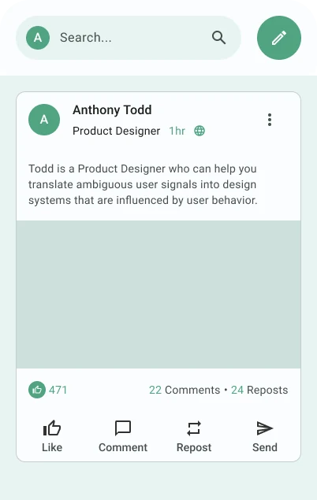
- Apple’s Liquid Glass Design System
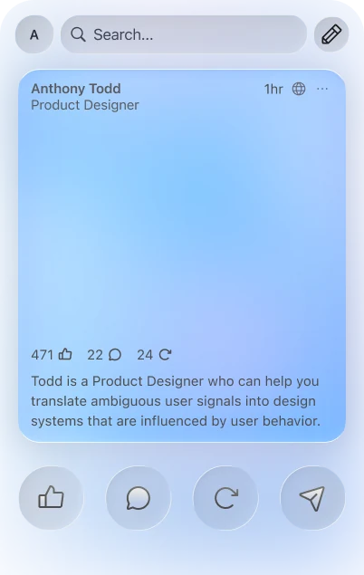
- Monday’s Vibe Design System
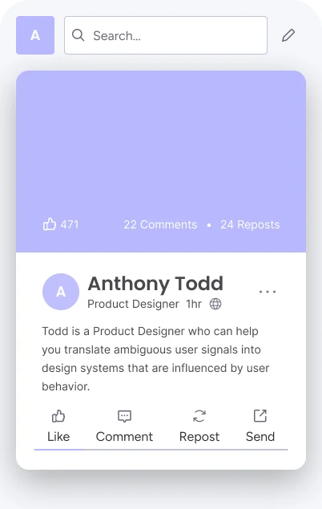
- Todd’s Custom Rounded Design System
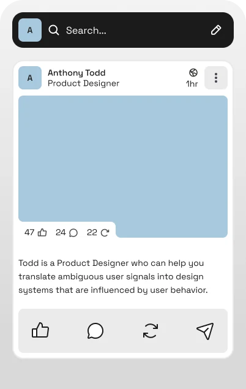
- IBM’s Carbon Design System
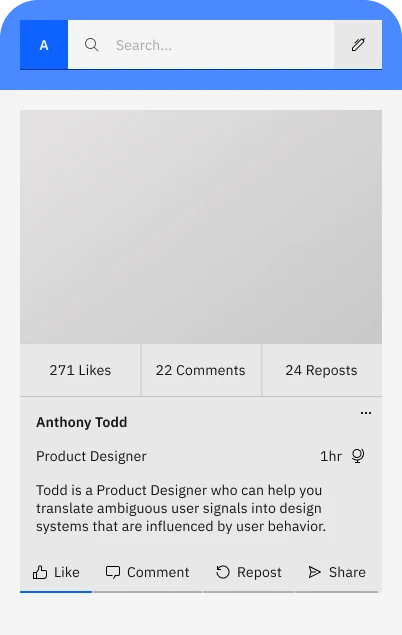
Assorted Product Design Work
Samples
- Login flow that expands to reveal a 2FA verification layer.
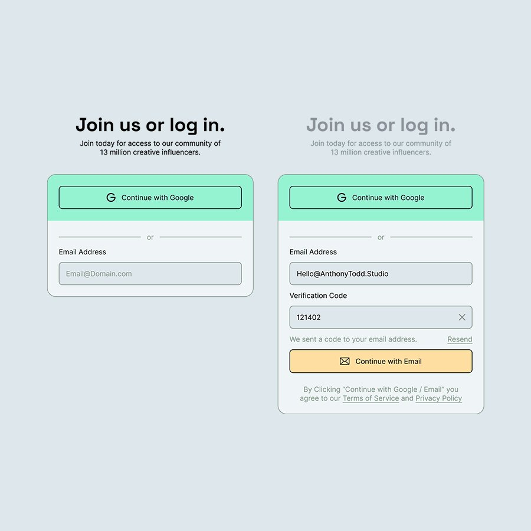
- “Jobs To Be Done” (JTBD) research boards mapping where users struggled across the buying journey.
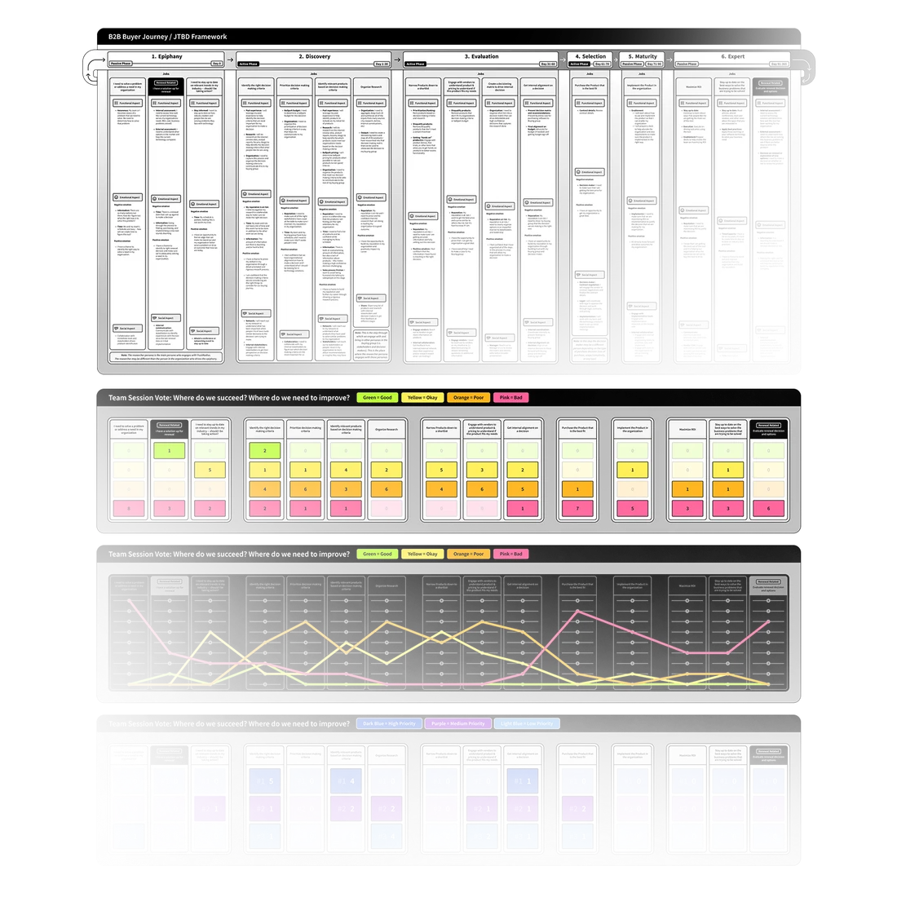
- Redesigning an old requirements filter into a global research sidebar.
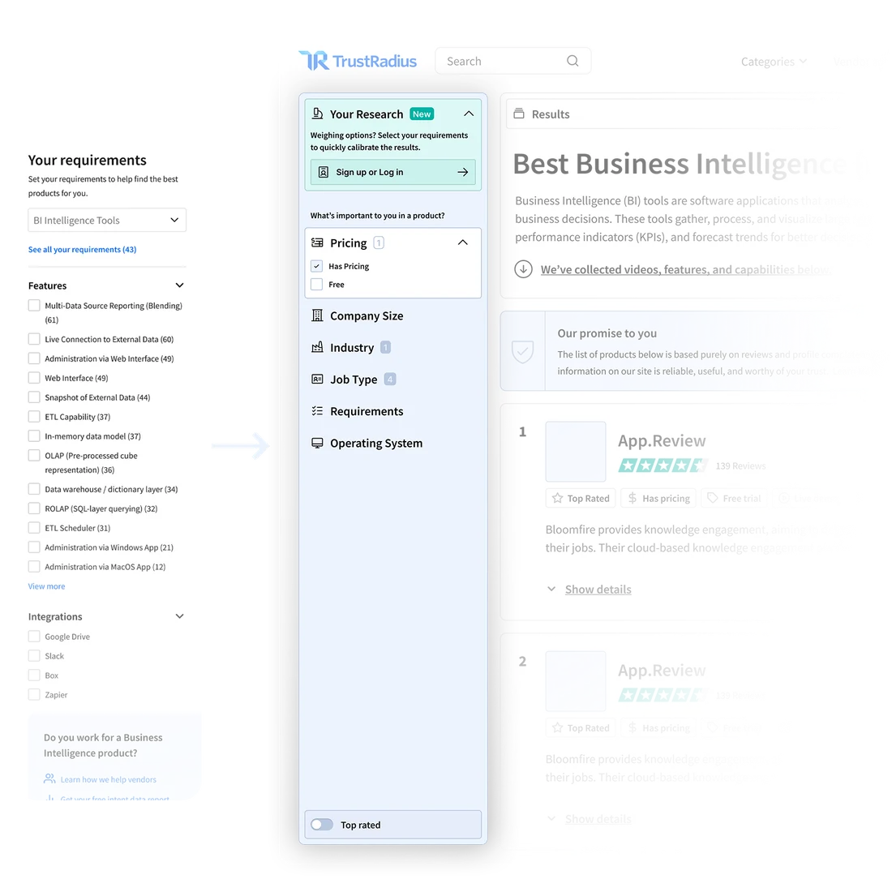
- Interface for a spreadsheet platform which uses component-based formulas.
- An AI-first homepage and search with suggested next steps.
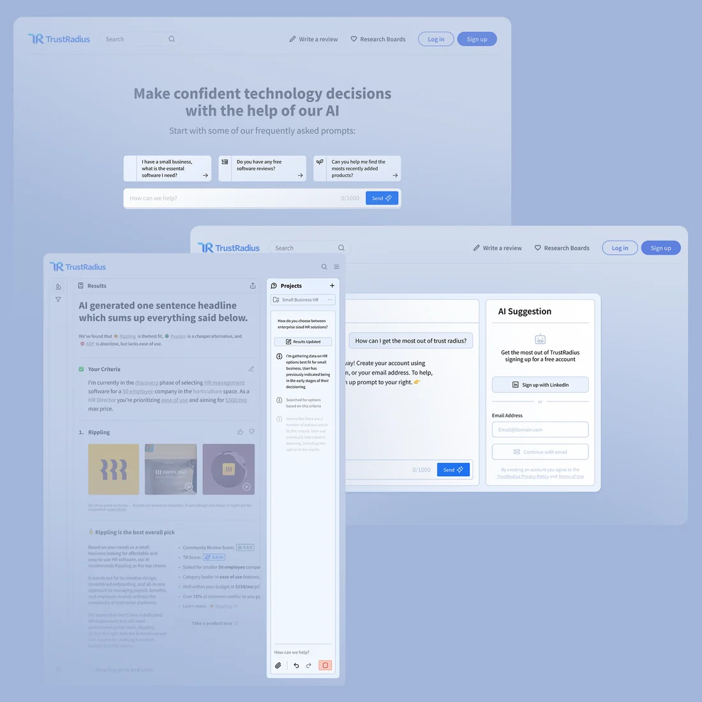
- The AI assistant sidebar on a product page, from prompts to answers.
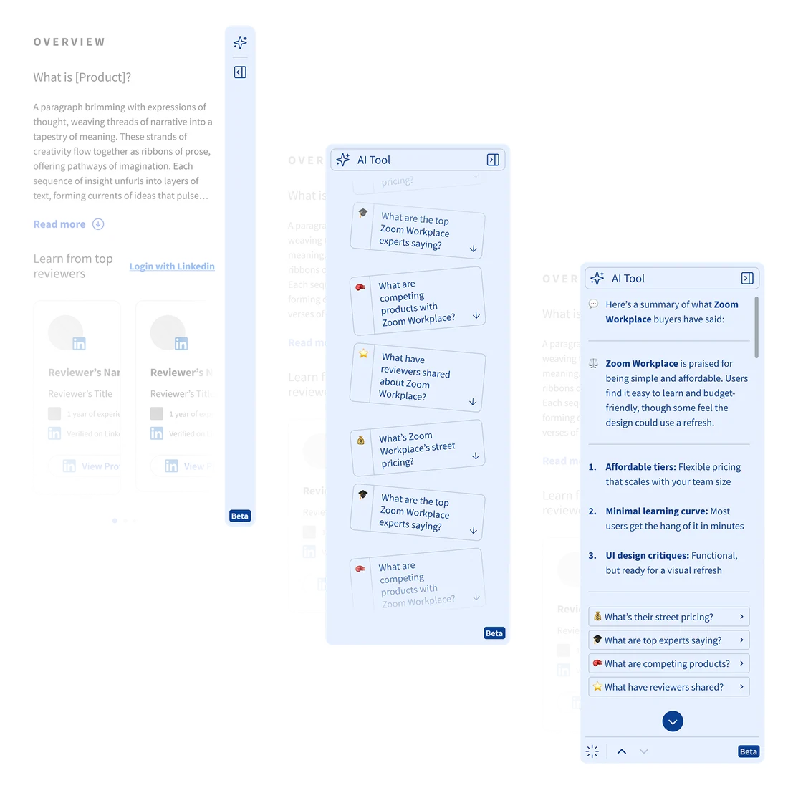
- A modernized review platform guided by an AI assistant.
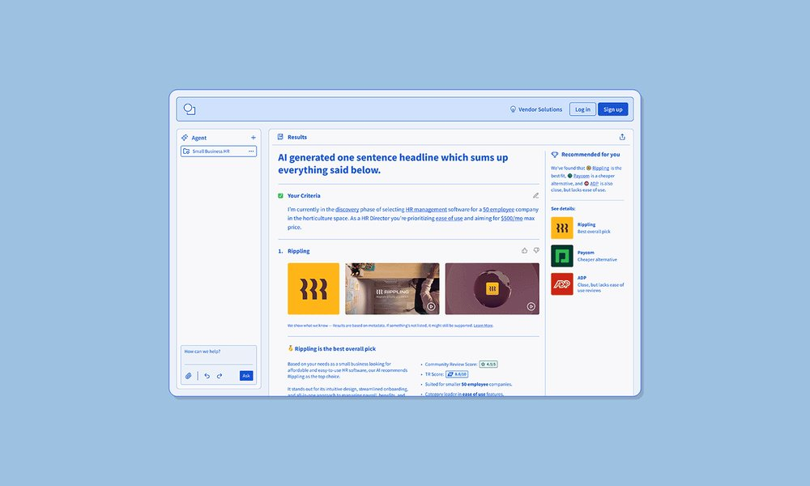
- The research sidebar, collapsed and expanded across results pages.
- Interactive and collapsable sidebar flows.
- Custom parallax landing page.
- Custom parallax marketing website.
- Pixel art direction, “Mud Season Deals.”